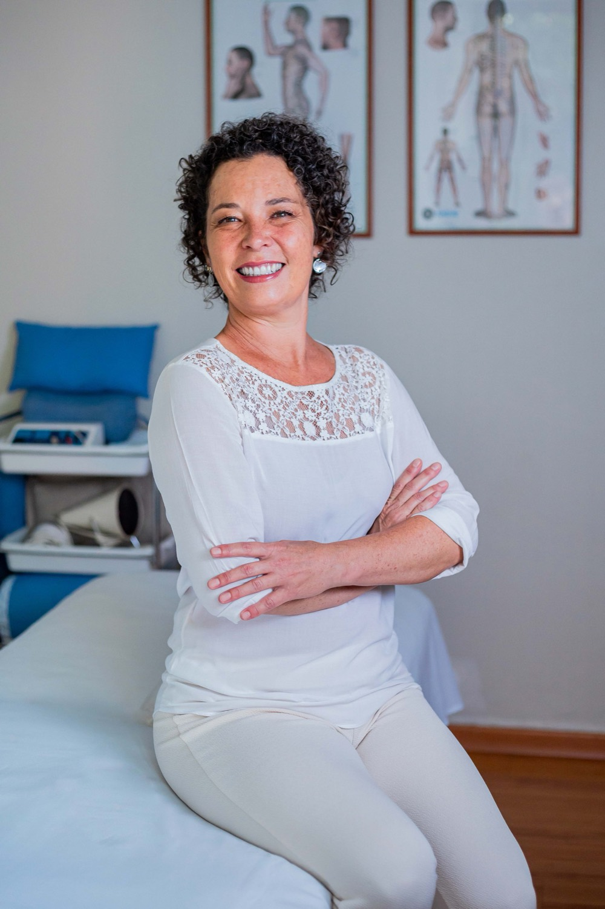

Acupuntura
Técnica milenar da medicina tradicional chinesa. Promove equilíbrio energético do organismo, tratando dores, doenças, disfunções físicas e emocionais. Disponível com ou sem agulhas.
Terapeuta corporal em Atibaia · desde 1995
Cuidados Terapêuticos
30 anos cuidando de saúde em Atibaia. Acupuntura, shiatsu, reflexologia e práticas integrativas.
Desde 1995
30 anos de prática contínua
Formação CBA
Colégio Brasileiro de Acupuntura
Recreio Maristela
Atibaia, São Paulo

Sobre
Sou terapeuta corporal desde 1995. Formei-me pelo Colégio Brasileiro de Acupuntura e Medicina Chinesa (CBA) e, desde então, dediquei minha vida a uma única coisa: cuidar das pessoas com técnica, presença e atenção real.
Atendo em Atibaia, no Recreio Maristela, num espaço pensado para que cada pessoa chegue, respire e se sinta acolhida desde o primeiro momento.
Cada sessão é única, pensada para o que você precisa naquele momento. Aqui, o cuidado é sem pressa. É sobre escutar o corpo, devolver a ele o que faltou, e fazer isso com técnica, presença e respeito.
Lilian Goldschmidt
Terapeuta corporal · Formação CBA
Terapias
Cada técnica é escolhida para o que o seu corpo pede naquele momento.
Técnica milenar da medicina tradicional chinesa. Promove equilíbrio energético do organismo, tratando dores, doenças, disfunções físicas e emocionais. Disponível com ou sem agulhas.
Massagem japonesa que trabalha pontos de pressão ao longo dos meridianos do corpo. Equilibra a energia, relaxa profundamente e alivia tensões acumuladas.
Massagem nos pés, onde estão representadas zonas particulares do corpo e cerca de 70 mil terminações nervosas em cada pé. Trabalha o corpo inteiro através dos pés.
Estimulação de pontos específicos na orelha para tratar diversas condições físicas e emocionais. Sutil, não invasiva, com resultados surpreendentes.
Atendimento dedicado, com técnicas adaptadas para promover bem-estar, mobilidade e conforto na terceira idade.
Depoimentos
Avaliações reais de clientes.
"A Lilian é minha acupunturista. Chego no consultório dela moído, dolorido, com o cansaço acumulado dos dias, e saio outra pessoa, energética e vibracionalmente diferente. As agulhas dela são milagre. Resolve muita coisa que eu nem sabia que estava ali."
"A Lilian é incrível, passo com ela já tem quase 2 anos, ambiente de paz, ótima profissional, muito pontual e simpática, além disso de uma mão abençoada, recomendo a todos da região."
"Ótima profissional, atenciosa. Curou minha hérnia de disco."
"A Lilian é uma ótima profissional. Gostei bastante do atendimento de acupuntura. Recomendo a todos."
"Lilian é uma profissional muito especial, minuciosa na avaliação, conduz o tratamento de maneira competente demonstrando seu conhecimento e dedicação ao trabalho."
"A Lilian é incrível! Acolhedora, muito simpática e uma profissional fantástica. Estou passando período de muita dor na lombar e as sessões de acupuntura me ajudaram muito. Super indico!"
"Maravilhoso. Nunca imaginei que ia fazer tão bem assim. A Lilian Goldschmidt é tão profissional e humana, uma atenção que não tenho palavras pra descrever. Obrigada."
"Maravilhosa! Cuida da minha saúde há 10 anos. Depois de iniciar o tratamento com ela nunca mais tive crises de hérnia de disco. Tratamento impecável, de corpo e alma."
"Lilian vem tratando minha labirintite com excelência. Muito prestativa e compreensiva. Me sinto renovada com as sessões."
"A Lilian é incrível, super acolhedora e atenciosa na saúde de forma integral. Tem me ajudado muito nos sintomas de ansiedade, tive uma excelente melhora. Não largo mais."
"Estava há 5 semanas travado. Saí de lá na sexta um pouco melhor, acordei no sábado 90 por cento, no domingo 1000 por cento. Só tenho a agradecer."
"A Lilian me reinicia, essa é a melhor definição. Ela é responsável por trazer de volta o equilíbrio e zerar todo o esgotamento físico e emocional. Profissional fantástica, gentil, acolhedora, atenta às minhas necessidades."
Produtos
Ao longo dos anos, fui criando e descobrindo produtos que realmente fazem diferença no cuidado com o corpo. Aqui você encontra o que produzo com minhas mãos.
Feitas à mão, com sementes naturais e ervas aromáticas (eucalipto ou camomila com hortelã). Compressas terapêuticas que podem ser usadas quentes, frias ou em temperatura ambiente.
Em breve, mais produtos selecionados.
Cursos
Em breve, vou compartilhar tudo que aprendi em 30 anos de prática em cursos completos. Para profissionais que querem se aprofundar e para pessoas que querem aprender a cuidar de quem amam.
Deixe seu contato para ser avisada em primeira mão quando os cursos estiverem disponíveis.
Avisamos você assim que as inscrições abrirem.
Dúvidas frequentes
As perguntas que mais chegam por aqui.
Na primeira consulta, a Lilian conversa com você sobre o que está te trazendo aqui, faz uma avaliação completa do histórico e do momento atual, e juntos escolhem a melhor abordagem para o seu corpo. Reserve cerca de uma hora.
A maioria das pessoas sente apenas uma pressão leve quando a agulha entra. As agulhas são finíssimas, descartáveis e estéreis. Para quem prefere, há a opção sem agulhas com Stiper: pastilhas hipoalergênicas de algodão impregnadas com micro partículas de silício, o mesmo mineral do quartzo. Ótimo condutor energético, estimula os pontos de forma não invasiva. Lilian também chama de acupuntura sem agulhas.
Depende do que está sendo tratado. Em algumas situações, uma única sessão já alivia bastante. Em outras, o ciclo costuma ser de 5 a 8 encontros, espaçados conforme o seu corpo responde. Tudo é conversado na avaliação inicial.
A forma mais rápida é pelo WhatsApp (11) 97177-3438. Clique em qualquer botão de Agendar no site, escreva o que está sentindo e a gente combina o melhor horário pra você.
O atendimento acontece no consultório, no Recreio Maristela, em Atibaia. Em situações específicas, como pós-operatório ou impossibilidade de locomoção, é possível avaliar um atendimento em casa.
O atendimento é particular e não há reembolso por plano de saúde. Valores conversados diretamente pelo WhatsApp.
Contato
Atendimento com hora marcada, em Atibaia. Escreva por aqui ou chame no WhatsApp.
Recreio Maristela, Atibaia
Av. John F. Kennedy, 64 · São Paulo
Como chegar pelo Google MapsRespondo assim que possível.